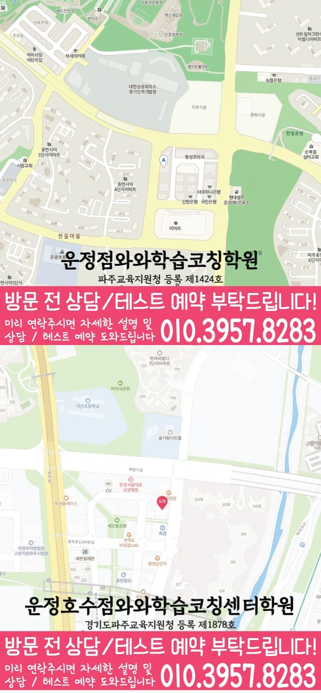

동패동 영어수학학원
동패동에서 안내하는 지점은 와와학습코칭센터 운정점입니다.
자료상 안내: 영어 초1~초6 / 중1~중3 / 고1~고3 · 수학 초1~초6 / 중1~중3 / 고1~고3

영어수학 학습 안내 이미지

지점·과목 안내
동패동 수업을 알아볼 때 확인할 지점
동패동에서 수업을 알아보는 학생에게 안내하는 지점은 와와학습코칭센터 운정점입니다. 지점 위치와 과목별 학년을 먼저 확인해 주세요.
과목별 안내 학년
- 영어
- 초1~초6 / 중1~중3 / 고1~고3
- 수학
- 초1~초6 / 중1~중3 / 고1~고3
제공 자료에 기재된 학년입니다. 현재 개설 과정·수업 시간·반 편성은 상담에서 확인해 주세요. 안내가 없는 학년은 수업 가능 여부가 확인되지 않았습니다.
실제 지점 위치
와와학습코칭센터 운정점
경기 파주시 동패동 1758-1 삼융프라자2 302호
주소로 네이버 지도 검색등록 정보·교습비·주변 학교
교육지원청 등록번호: 파주교육지원청 등록 제1424호
주변 학교 참고: 동패초등학교 · 두일초등학교 · 석곶초등학교 · 심학초등학교 · 운광초등학교 · 초롱초등학교 · 한가람초등학교 · 교하중학교 · 동패중학교 · 두일중학교 · 심학중학교 · 동패고등학교. 재학생 수강 여부나 학교별 반 편성을 뜻하지 않습니다.
센터 위치 안내

학습 상담 준비
두 과목의 공부 시간을 배분할 때
운정점의 영어와 수학은 과목별 안내 학년을 각각 확인해야 합니다. 학생의 약점과 학교 일정에 따라 두 과목의 우선순위를 정리해 주세요.
함께 의논할 주제 과목별 약점 진단·공부량과 완료 기준
과목마다 실제로 쓴 시간
일주일 동안 영어와 수학에 쓴 시간, 끝낸 양, 미룬 과제를 따로 적어 보세요. 두 과목의 분량을 같게 맞추기보다 학생이 어려워하는 부분에 시간을 어떻게 배분할지 의논해 주세요.
복습과 과제가 겹치는 날
단어 복습, 독해 과제, 수학 오답을 한꺼번에 몰아서 하는 날이 있는지 살펴보세요. 학교 과제와 함께 진행할 수 있는 수업 요일과 과제량을 확인해 주세요.
학교와 일정
동패동 학교생활과 함께 맞춰 볼 일정
- 초등
- 동패초등학교 · 두일초등학교 · 석곶초등학교 · 심학초등학교 · 운광초등학교 · 초롱초등학교 · 한가람초등학교
- 중등
- 교하중학교 · 동패중학교 · 두일중학교 · 심학중학교
- 고등
- 동패고등학교
지역 참고 학교이며, 재원 여부나 학교별 반 운영을 뜻하지 않습니다. 재학 중인 학교의 교재·시험 범위·하교 시간을 기준으로 상담해 주세요.
자주 묻는 질문
수강 전 확인할 질문
운정점의 영어·수학 안내 학년은 어떻게 되나요?
자료에 기재된 학년은 영어 초1~초6 / 중1~중3 / 고1~고3, 수학 초1~초6 / 중1~중3 / 고1~고3입니다. 현재 개설 과정과 수업 시간은 지점 상담에서 확인해 주세요.
교습비와 현재 수업 시간은 어떻게 확인하나요?
센터별 교습비 자료에서 안내 금액을 확인할 수 있습니다. 희망 과목·학년을 알려 주고 현재 과정의 교습비, 교재비 등 추가 비용, 수업 요일과 시간을 확인해 주세요.
영어와 수학을 꼭 같은 양으로 공부해야 하나요?
현재 이해도와 학교 과제가 다르므로 두 과목의 분량을 동일하게 정할 필요는 없습니다. 과목별로 끝낼 수 있는 양과 복습 시간을 적어 보고, 함께 수강할 경우의 일정과 과제 조정 방식을 문의해 주세요.
상담 후 정리할 내용
안내받은 수강 과목·학년, 수업 요일·시간, 교습비와 추가 비용을 함께 적어 두세요. 학생이 시작할 학습 범위와 과제량, 다음에 학습 상태를 확인할 시점도 정리하면 계획을 이어 가기 좋습니다.
Consulting
동패동 영어수학학원 상담 전
영어와 수학 중 어디가 먼저 막히는지 확인해보세요.
최근 시험지와 현재 교재, 숙제 습관을 알려주시면 영어·수학의 우선순위를 더 구체적으로 잡을 수 있습니다.